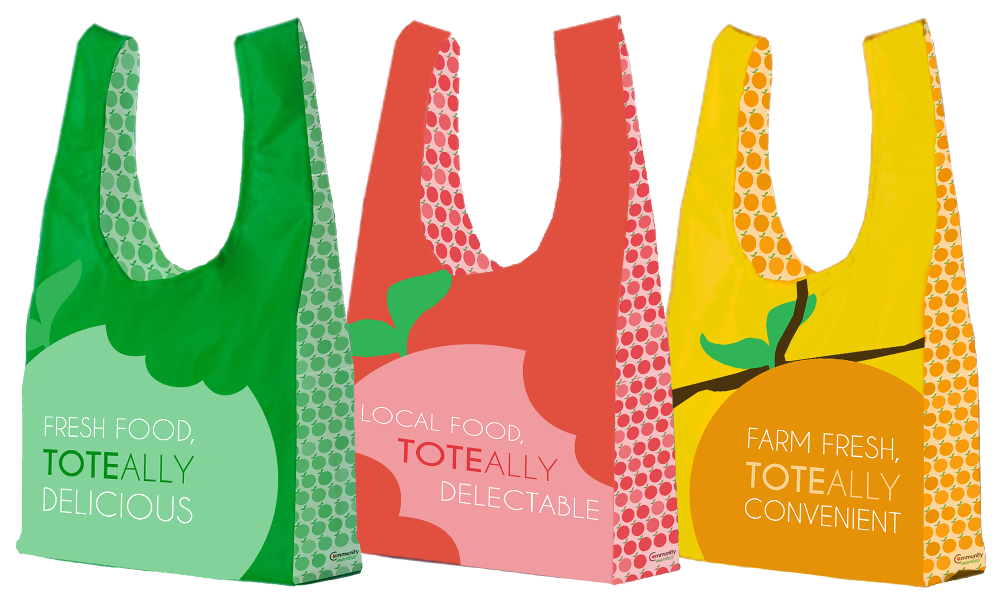
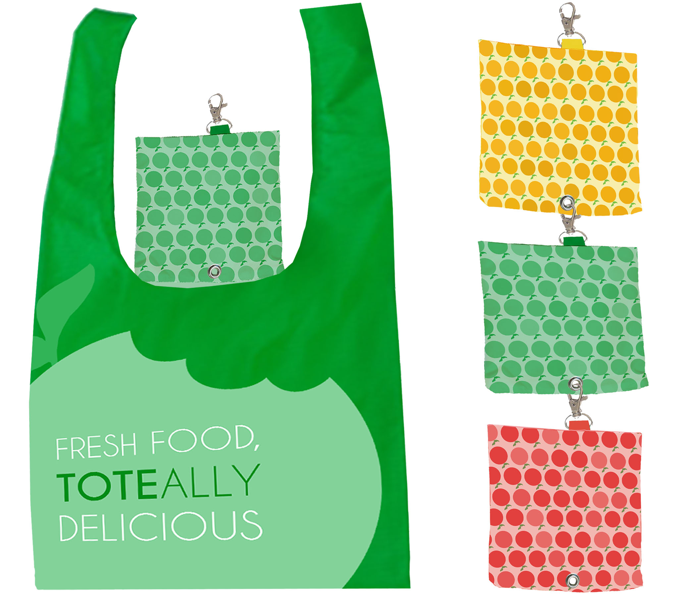
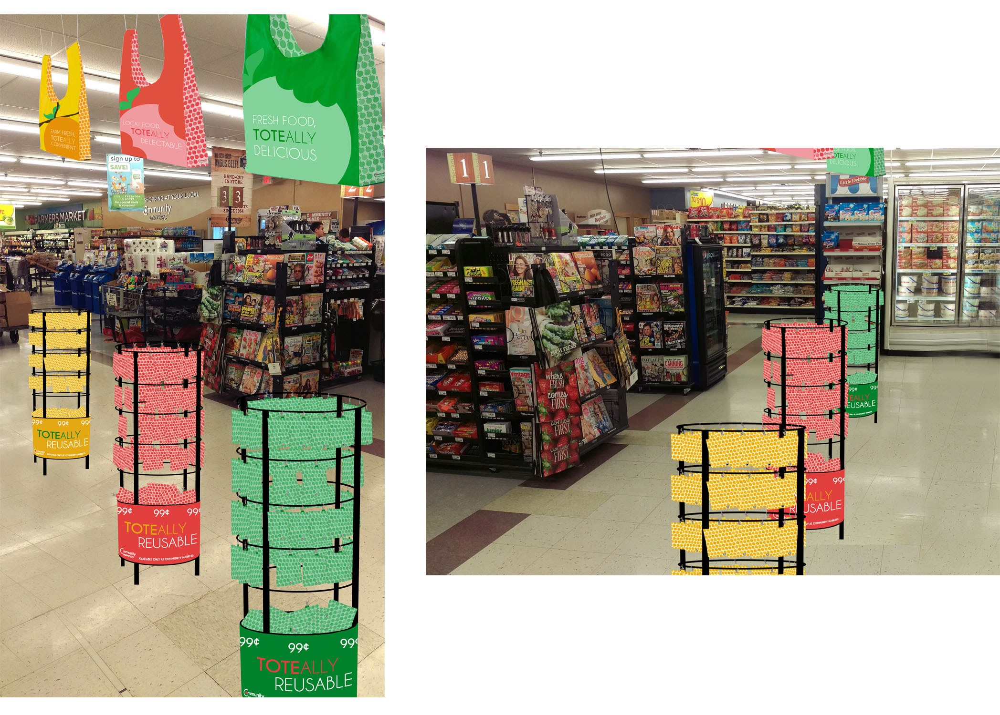
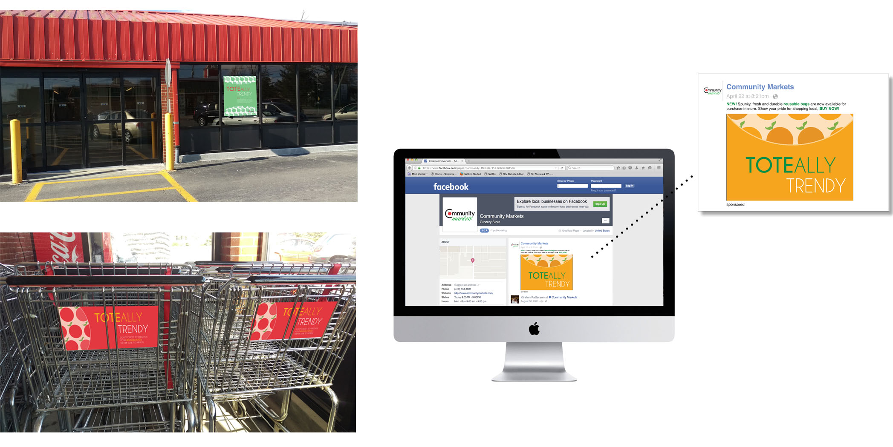

Community Markets Bags
new reusable bag designs and promotional media for Community Markets grocery
PROBLEM: Community Markets grocery store in Ada, Ohio is seeking new designs for their reusable bags and a newly designed point of purchase for them.
SOLUTION: Incorporate Community Markets apple symbol and bright, eye-catching colors into the designs of the bags. This symbol is applied as a major graphic on the front and back of each bag, as well as applied as a pattern on the side panels to create a unified visual system that is recognizable.

ABOVE: Three new reusable bag designs for Community Markets grocery store.

ABOVE: Display of how bag can fold into pouch within, making it easy to trasport. Once folded, there is metal hook that allows for the pouches to hook together, making for bags to easily be stored together and gathered quickly.

ABOVE: Example of how the point of purchase would appear. Open bags would be hung from the ceiling showing off the designs, the displays below would show how they conveniently fold up and can hook anywhere.

ABOVE: Various ads (poster, cart flap so customers are reminded about the bags available for purchase, social media) promoting Community Markets new reusable bags.